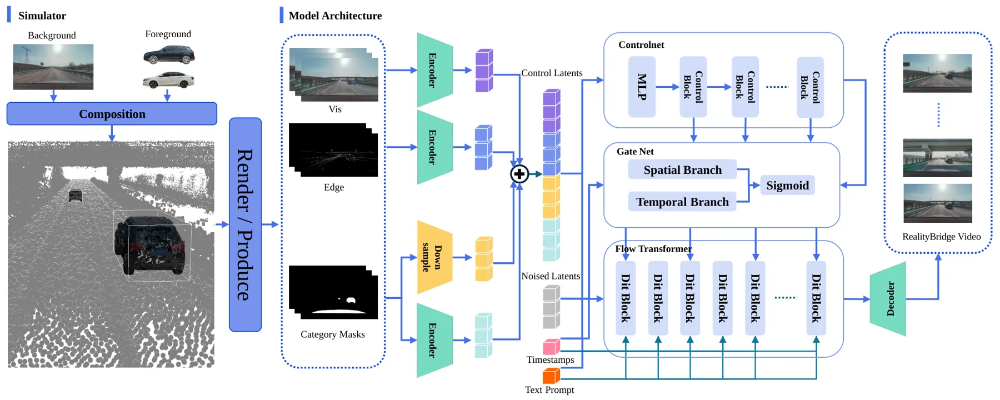
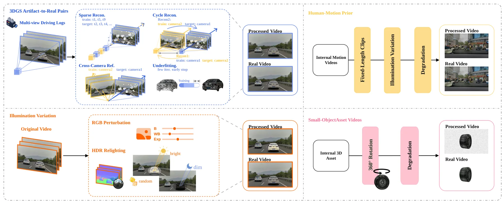
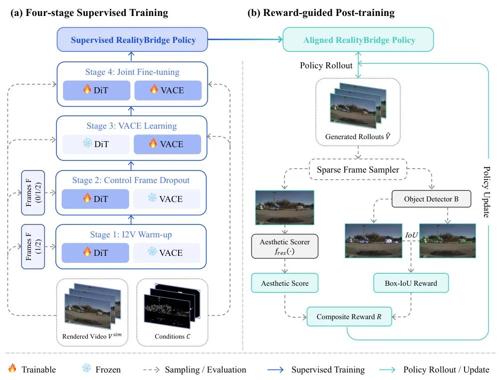
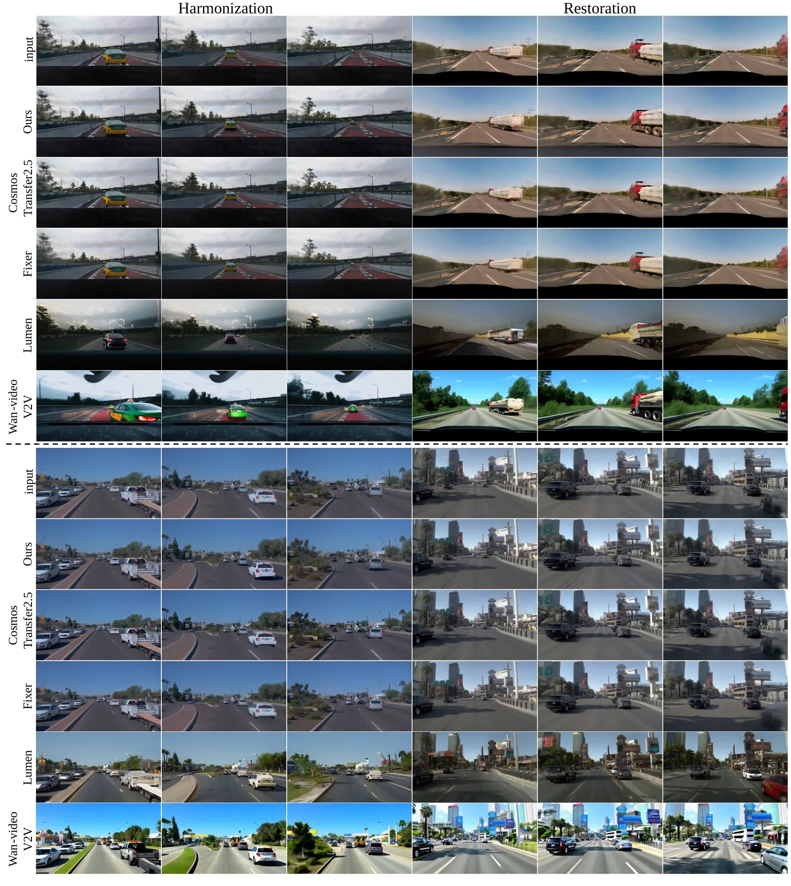
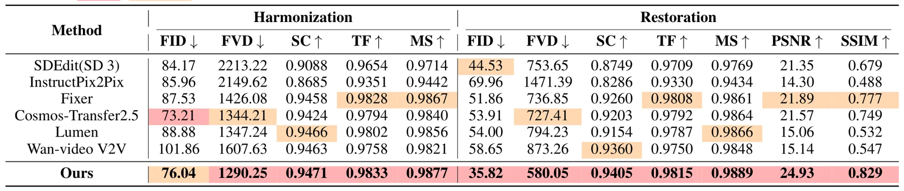
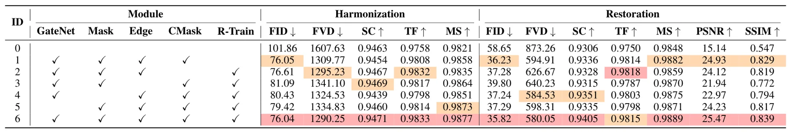
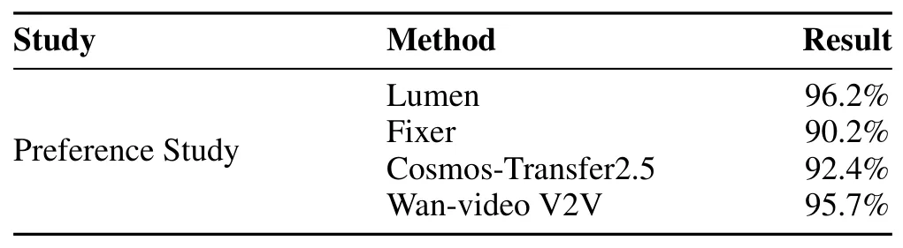

RealityBridge：连接可编辑 3DGS 驾驶仿真与真实世界视频RealityBridge: Bridging Editable 3D Gaussian Splatting Driving Simulations and Real-World Videos
与 3DGS 自动驾驶仿真和长尾数据生成相关，但不是定位、建图或重建后端；适合关注仿真数据质量与 3DGS 场景编辑的后续专题。
一句话工作总结
RealityBridge 用多模态控制和长视频训练修复可编辑 3DGS 驾驶仿真视频，重点降低伪影和时间不一致。
摘要
面向安全的自动驾驶需要长尾危险场景，但真实采集与复现困难。可编辑 3D Gaussian Splatting 仿真可重建真实驾驶场景并支持可控编辑，但编辑后的 3DGS 渲染视频存在明显 sim-to-real gap，包括渲染伪影、前景资产退化、光照不一致和时间闪烁。RealityBridge 提出结构保持、资产感知的 sim-to-real 框架，使用渲染视频、前景掩码、边缘图和语义掩码等多模态控制，并通过轻量 GateNet 在 backbone 层之间自适应分配条件。作者还构建目标训练数据，引入自回归长视频训练和 reward-guided post-training，以改善修复质量、时间稳定性和幻觉抑制。实验表明该方法在内部和公开驾驶数据集上优于既有方法。
Long-tail hazardous scenarios are essential for safety-oriented autonomous driving, yet they are difficult to collect and reproduce at scale. Editable 3D Gaussian Splatting (3DGS) simulation offers a promising alternative by reconstructing real driving scenes and supporting controllable scene editing. However, edited 3DGS-rendered videos still suffer from a significant Sim-to-Real gap, including rendering artifacts, degraded foreground assets, inconsistent illumination, and temporal flickering. Existing restoration and video generation methods are insufficient for this task, as they often fail to jointly repair 3DGS-specific artifacts, improve visual realism, and ensure temporal consistency. To fill this gap, we propose RealityBridge, a structure-preserving and asset-aware Sim-to-Real framework for edited 3DGS driving videos. RealityBridge uses multimodal controls, including rendered videos, foreground masks, edge maps, and semantic masks, together with a lightweight GateNet for adaptive condition allocation across backbone layers. We further construct targeted training data and introduce autoregressive long-video training with reward-guided post-training to improve restoration quality, temporal stability, and hallucination suppression. Extensive experiments on internal and public driving datasets show that RealityBridge outperforms existing methods in artifact removal, illumination harmonization, and long-sequence temporal consistency.
中文解读摘录
- 链接：abs / PDF；作者：Zhenhua Wu, Yun Pang, Mingkun Chang, Yuwei Ning, Liangzhi Wang, Yi Xiao, Guanbin Li；类别：cs.CV, cs.AI；采集 score=12。
- 核心思路：针对可编辑 3DGS 自动驾驶仿真视频中的渲染伪影、前景资产退化、光照不一致和时间闪烁，做结构保持、资产感知的 sim-to-real 修复。
- 方法要点：输入 rendered videos、foreground masks、edge maps、semantic masks 等多模态控制；用轻量 GateNet 自适应分配条件；再通过 autoregressive long-video training 和 reward-guided post-training 提升长序列一致性。
- 关注点：更偏感知仿真和数据生成，不是 SLAM 建图；但对 3DGS 驱动场景编辑、自动驾驶长尾数据和仿真到真实视觉质量控制有参考价值。
图表/页面预览

{kind=link}

{kind=link}

{kind=link}

{kind=link}

{kind=link}

{kind=link}

{kind=link}
